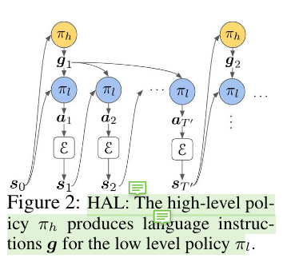

[TOC]
- Title: Language as an Abstraction for Hierarchical Deep Reinforcement Learning
- Author: Yiding Jiang et. al.
- Publish Year: 2019 NeurIPS
- Review Date: Dec 2021
Summary of paper
Solving complex, temporally-extended tasks is a long-standing problem in RL.
Acquiring effective yet general abstractions for hierarchical RL is remarkably challenging.
Therefore, they propose to use language as the abstraction, as it provides unique compositional structure, enabling fast learning and combinatorial generalisation

They present their framework for training a 2-layer hierarchical policy with compositional language as the abstraction between the high-level policy and low-level policy.
Low level policy
The low level policy follows “goal-conditioned MDP setting”, given goal state $s_g$’s description $g$ and current state $s_i$, the low-level policy run several action steps to reach the goal state $s_g$, otherwise timeout and they will receive updated description $g$.
hindsight instruction relabelling
this is a data augmentation technique that provides balanced reward signal to the lower-policy agents to learn.
It has chances to relabel the goal-description $g$ to match the current state $s$. Therefore the low-level policy will at least received some positive reward.
High level policy
high level policy generates goal descriptions based on the current state and on the current task (such as object ordering or other predefined tasks)
In this paper the author did not put many efforts discussing the high level policy.
The high-level policy πh(g|s) is trained to solve a standard MDP whose state space is the same $S$ as the low-level policy, and the action space is $G$. In this case, the high-level policy’s supervision comes from thereward function of the environment which may be highly sparse.
Good things about the paper (one paragraph)
Few paper mentioned goal conditioned MDP when they discuss NLP RL model. Essentially the NLP RL model is highly associated with goal conditional MDP setting.
Also hindsight instruction relabelling is a very great technique that can be used in any other studies.
Incomprehension
taking care of the overlapping between “goal region” and the uncertainty in “natural language instruction”
i.e., one state can be described by a group of natural language instructions. one natural language instructions can refers to a group of states.
Therefore we need to think about the “sweet point”
Potential future work
question: Would the higher level policy network know how to solve low-level tasks? ya, maybe know, but due to some limitations (like limited number of parameters, it can only handle limited tasks)
- so we treat the instructor as control centre, and let the lower level policy network to handle the detailed, specific tasks.
- but the question is how to let different components to only care about their own works given that their reward signal are the same!!!